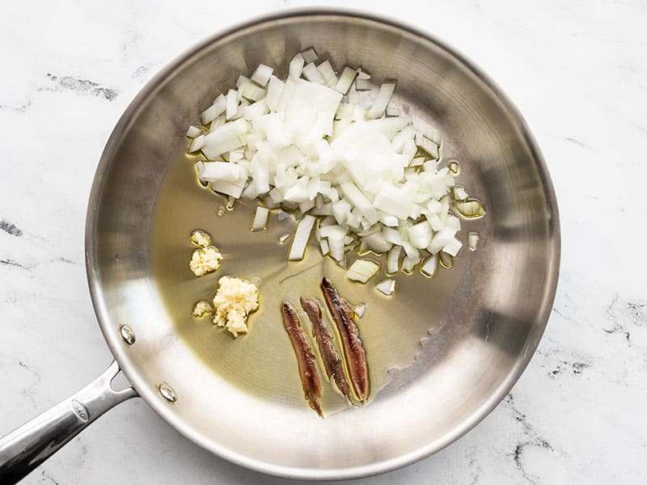
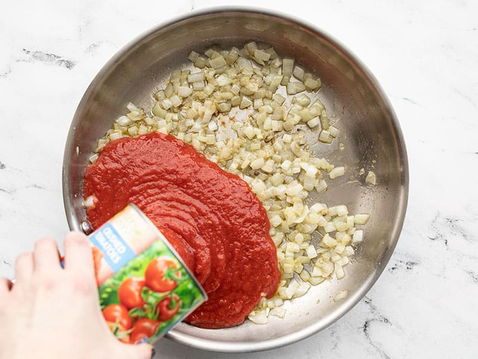
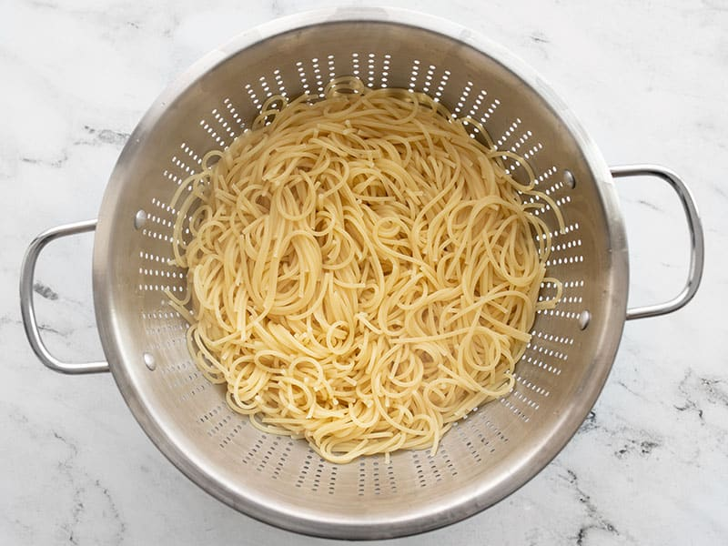
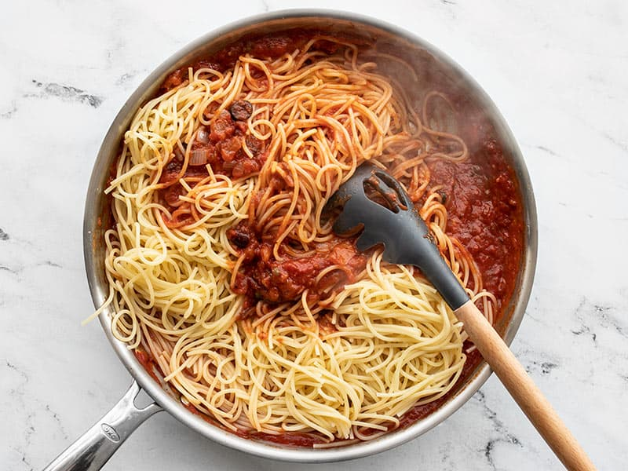

The name Pasta Puttanesca loosely translates to “whore's pasta.” Why? Because it's
delicious and cheap… no, I'm kidding (kinda). The theory is that this simple dish was
a favorite of people who were so dirt poor that they had to live in (and work) the streets.
It uses ingredients that were inexpensive and abundant in Italy back in the day, like olives,
anchovies, pasta, tomatoes and capers. You can read more about thehistory of pasta puttanesca here.
And while those ingredients are all inexpensive today in America, we can still use them
to make a budget-friendly meal. In true Budget Bytes fashion, the recipe uses the super
potent ingredients sparingly to pack a flavor punch without driving up the cost too high.
A grandmother sharing the joy of pasta with her grand daughter
Ingrediants
2 Tbsp olive oil
1 yellow onion
4 cloves garlic
3 anchovy filets
1 28oz. can crushed tomatoes
1/2 tsp dried basil
1/4 tsp crushed red pepper
1/2 cup sliced kalamata olives
2 Tbsp capers
1 lb. spaghetti
Steps
Dice the onion and mince the garlic. Add the olive oil, onion, garlic, and anchovy
filets to a large skillet. Sauté the ingredients over medium heat until the onions
are soft and the anchovies have dissolved.

Add the crushed tomatoes to the skillet, along with the basil, crushed red pepper,
sliced olives, and capers. Stir to combine, then allow the sauce to come up to a simmer.
Once simmering, turn the heat down to low and let the sauce simmer, stirring occasionally,
while you cook the pasta.

Bring a large pot of water to a boil over high heat. Once rapidly boiling, add the spaghetti
and continue to boil until the pasta is tender (about 7 minutes). Reserve about 1/2 cup of
the starchy pasta water before draining the past in a colander.

Add the cooked and drained pasta to the puttanesca sauce in the skillet (or if your skillet
is not big enough, add them both to the large pot used to cook the pasta, heat turned off).
Stir to combine the pasta with the sauce. If the pasta becomes dry, add a splash or two of
the reserved pasta water. Serve hot.
